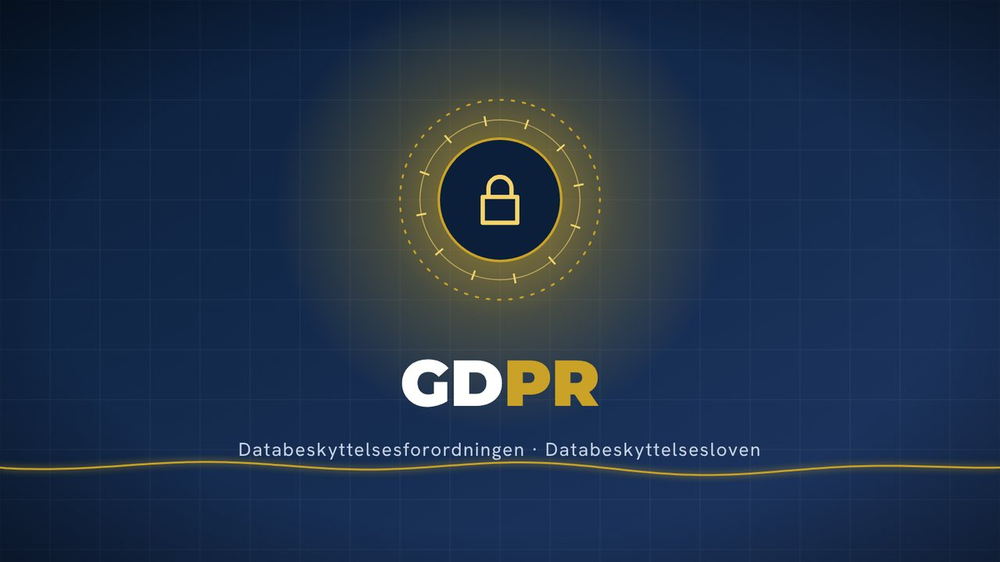

ARG
ARGARGOS › Reglerne på 4 minutter › GDPR
GDPR på 4 minutter: Der gives oftest bøder for det grundlæggende
GDPR er fundamentet for al datastyring i Europa. Det er ikke nok at sige, at man overholder reglerne. Man skal kunne bevise det. Der gives oftest bøder for det grundlæggende.

- 0:00Små fejl
- 0:12Bøderne
- 0:26Hvad straffes
- 0:41GDPR
- 0:49Hvad den kræver
- 1:10Digital omnibus
- 1:30Datoer
- 1:51Kæden
- 2:07I Danmark
- 2:21Hvad gør man
Det vigtigste
- 20 mio. € eller 4 % af den globale omsætning
- 25.5.2018 GDPR gælder
- 1.1.2026 procesforordning (EU) 2025/2518 i kraft
- 2.4.2027 gælder for nye grænseoverskridende sager
- Ultimo 2027 forenklingen afsluttet
- Intet retsgrundlag Behandling uden klart grundlag
- Forkert fortegnelse Svarer ikke til virkeligheden
- Opbevaring Data gemt for længe
Transskription
Den fulde speaktekst
0:00 · Små fejl
En e-mail til den forkerte modtager. En backup, som ingen slettede. Data uden for Europa. Tilsyneladende uskyldigt. Indtil klagen kommer.
0:12 · Bøderne
Databeskyttelsesforordningen har gældt siden 2018, med bøder op til tyve millioner euro eller fire procent af den globale omsætning. I Danmark suppleres den af databeskyttelsesloven. Datatilsynet fører tilsyn, men bøderne gives af domstolene.
0:26 · Hvad straffes
Der gives oftest bøder for det grundlæggende. Behandling uden klart retsgrundlag. En fortegnelse, der ikke svarer til virkeligheden. Data, der gemmes for længe. Databehandlere uden kontrol. Og sikkerhed, der kun findes på papiret.
0:41 · GDPR
GDPR er fundamentet for al datastyring i Europa. Det er ikke nok at sige, at man overholder reglerne. Man skal kunne bevise det.
0:49 · Hvad den kræver
Hvad den kræver i dag. Et retsgrundlag og gennemsigtighed for hver behandling. En fortegnelse og, ved høj risiko, en konsekvensanalyse. Databeskyttelse gennem design, og en aftale med hver databehandler. Og anmeldelse af brud inden for 72 timer. Overførsler uden for EØS, altid med garantier.
1:10 · Digital omnibus
Og hvad der kommer: den digitale omnibus, stadig under forhandling. Den ville røre ved begrebet personoplysning, men Rådet bremser. Den ville anerkende legitim interesse for AI. Og kun brud med høj risiko skulle anmeldes, inden for 96 timer. Men det er ikke lov: i dag gælder GDPR, som den er.
1:30 · Datoer
De vigtige datoer. 25. maj 2018: GDPR gælder. 1. januar 2026: den nye procesforordning træder i kraft. 2. april 2027: den gælder for nye grænseoverskridende sager. Og udgangen af 2027: forenklingen afsluttet.
1:51 · Kæden
Hvert led har sin rolle. Producenten: databeskyttelse gennem design. Grossisten: aftaler om support. Integratoren: foranstaltninger og underdatabehandlere. Og slutkunden: retsgrundlag, fortegnelse og konsekvensanalyser.
2:07 · I Danmark
I Danmark fører Datatilsynet tilsyn med GDPR. Det indstiller til bøde, men det er domstolene, der idømmer den. Databeskyttelsesloven tilpasser GDPR til dansk ret. Og ved Data Act tager Datatilsynet sig fortsat af personoplysninger.
2:21 · Hvad gør man
Hvad gør man nu. Overhold GDPR i dag, styr brud på datasikkerheden og sikr træningen af AI. ARGOS beviser det i stedet for at påstå det: en reel fortegnelse, konsekvensanalyser og bevis for hver foranstaltning. GDPR: at overholde er at kunne bevise.
Ofte stillede spørgsmål
Hvad er GDPR?
GDPR er fundamentet for al datastyring i Europa. Det er ikke nok at sige, at man overholder reglerne. Man skal kunne bevise det. Databeskyttelsesforordningen har gældt siden 2018, med bøder op til tyve millioner euro eller fire procent af den globale omsætning. I Danmark suppleres den af databeskyttelsesloven. Datatilsynet fører tilsyn, men bøderne gives af domstolene.
Hvad kræver GDPR?
Hvad den kræver i dag. Et retsgrundlag og gennemsigtighed for hver behandling. En fortegnelse og, ved høj risiko, en konsekvensanalyse. Databeskyttelse gennem design, og en aftale med hver databehandler. Og anmeldelse af brud inden for 72 timer. Overførsler uden for EØS, altid med garantier.
Hvilke datoer er vigtige?
De vigtige datoer. 25. maj 2018: GDPR gælder. 1. januar 2026: den nye procesforordning træder i kraft. 2. april 2027: den gælder for nye grænseoverskridende sager. Og udgangen af 2027: forenklingen afsluttet.
Hvad gælder i Danmark?
Der gives oftest bøder for det grundlæggende. Behandling uden klart retsgrundlag. En fortegnelse, der ikke svarer til virkeligheden. Data, der gemmes for længe. Databehandlere uden kontrol. Og sikkerhed, der kun findes på papiret. I Danmark fører Datatilsynet tilsyn med GDPR. Det indstiller til bøde, men det er domstolene, der idømmer den. Databeskyttelsesloven tilpasser GDPR til dansk ret. Og ved Data Act tager Datatilsynet sig fortsat af personoplysninger.
Hvad bør en virksomhed gøre nu?
Hvad gør man nu. Overhold GDPR i dag, styr brud på datasikkerheden og sikr træningen af AI. ARGOS beviser det i stedet for at påstå det: en reel fortegnelse, konsekvensanalyser og bevis for hver foranstaltning. GDPR: at overholde er at kunne bevise.
Officielle kilder
Se også
 EHDS
EHDSEHDS på 4 minutter: For hospitaler og producenter
 AI-forordningen
AI-forordningenAI-forordningen på 4 minutter: Danmark gik forrest
 NIS2
NIS2NIS2 på 4 minutter: Danmark: NIS2 er allerede lov
Speak og musik er genereret med kunstig intelligens (art. 50 i AI-forordningen). Generel information, ikke juridisk rådgivning; status november 2026, ifølge Software in a Box’ regulatoriske faktaark. Videoklip under licens fra Envato.
Sådan indlejrer du præsentationen på en anden hjemmeside: <iframe src="https://argos.softwareinabox.eu/da/regler/gdpr/presentacion/?embed=1" width="960" height="540" allow="autoplay; fullscreen" title="GDPR på 4 minutter: Der gives oftest bøder for det grundlæggende"></iframe> med et link til denne side.
Findes også på: EspañolDeutschFrançaisFrançais (Belgique)ItalianoNederlandsNederlands (België)Português